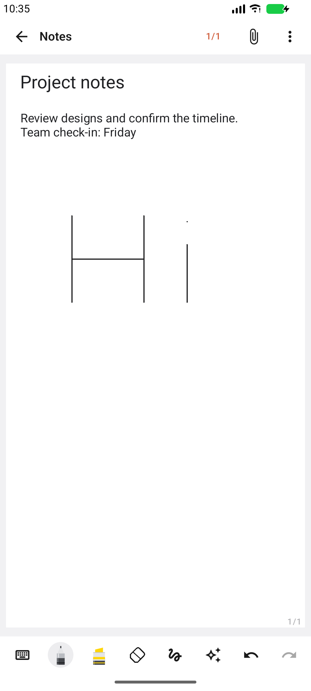
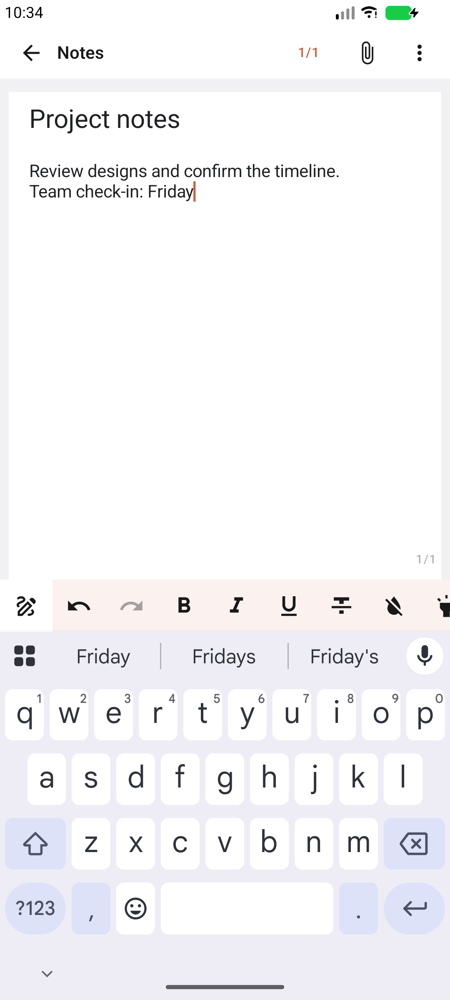
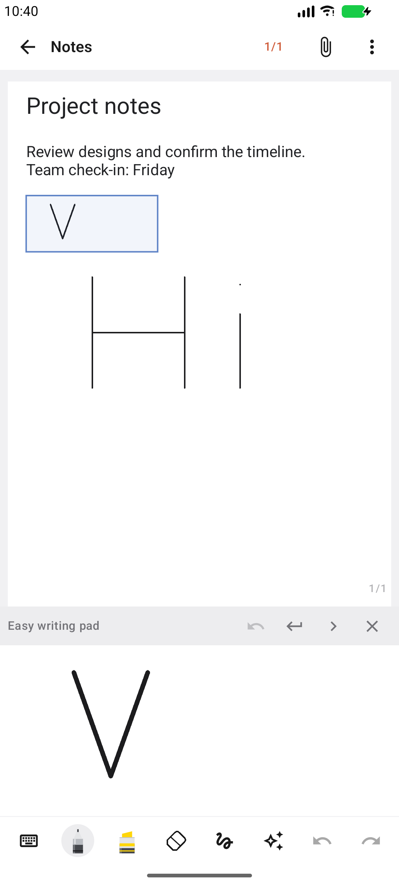

Latest: Notes 1.2 interface reconstruction, screenshots and validation.
15 October 2026 · App version 1.1 (17). This revision replaces the separate text-editor/drawing-attachment workflow for notes opened from the library. The editor follows the supplied Samsung Notes reference's compact tools and contextual panels, while using an independently implemented document and rendering engine.
This is a closer reconstruction, not a complete or pixel-identical copy of Samsung Notes. Samsung's private document format, account services, AI features and device integrations are not provided. The implemented behaviour and remaining differences are listed explicitly below.
| Area | Implemented behaviour |
|---|---|
| One page surface | Titles, positioned rich text, checklists, images and ink share document coordinates. Switch between typing and handwriting without leaving the page. Two fingers pan/zoom; opening the keyboard keeps the page origin anchored. Existing note content is imported once, preserving source files and rich spans. |
| Text | Editable in-page title, native selection/copy/paste, bold/italic/underline/strike, font/highlight colours, sizes, alignment, simple bullet/number prefixes, indentation, editable text boxes, and local text undo/redo. Text edits also update the library's search index through the note's text blocks. |
| Handwriting | Pressure-sensitive ballpoint, fountain, pencil, brush, calligraphy, marker and highlighter; thickness, smoothing, opacity, nib angle, custom colours, favourites and decorative stroke styles. Area/stroke/highlighter-only erasing, lasso/rectangle selection, selection transforms, style changes, ordering and undo/redo. |
| Writing assistance | Magnified easy-writing pad writes directly into the highlighted region of the same document. Advance-area and next-line controls move that region. Optional zoom lock preserves two-finger scrolling. Straighten handwriting estimates the selected strokes' baseline and rotates it toward horizontal. Shapes and automatic shape correction remain available. |
| Images and audio | Insert a device image onto the page, drag it, resize with aspect ratio preserved, delete, and undo. Record/play local audio in the note's recordings panel; stopping or dismissing the panel saves the recording. Permission and playback errors are shown. |
| Pages and PDFs | Add, duplicate, reorder, delete pages with text, images and ink preserved together in history. Import PDF pages as backgrounds, annotate, export one PNG or a complete PDF, and share text or a rendered image. The renderer includes actual text glyphs, images, titles and ink in exports and thumbnails. |
| Organization | Search, sorting, grid/list library, folders, pinned notes, Trash, note lock gate and theme preferences remain connected. The compact note menu exposes pin, move, lock and Trash actions alongside document tools. |
The app-private document JSON is version 3. Readers still accept old stroke arrays and version-2 documents. New files retain rich spans, page/item identities and positions, image/audio ownership paths, imported-block markers and the title. Migration skips already represented block IDs to prevent duplicate text on reopening. Note metadata and the search text are synchronized after the document file is saved; save failures keep the editor open with feedback.
38 tests passed (12 JVM and 26 Android), including visible title/body editing with the keyboard and the keyboard-height regression. Android lint: 0 errors / 74 warnings. The seven notebook/document checks were also rerun after the explicit Android resize setting.
Checks cover actual text-to-ink mode switching, note title/body save and reopening from the library, idempotent rich-text import, text/image/audio serialization, page history, checklist state, image transforms, straightening, magnified-pad coordinates, pen pressure with palm input, sparse-stroke erasing and PDF background preservation. A PDF rendering test checks visible text pixels, a blue image and red ink at their expected document positions.
These show the installed app and temporary review content, not a mockup or data seeded into the application.



Samsung account/cloud sync, .sdoc/.sdocx import/export, Samsung AI/OCR/transcription, widgets, screen-off memos, proprietary S Pen gestures, PDF text selection and Office export formats are not implemented. Handwriting recognition uses ML Kit; this emulator cannot resolve the language-model download host, so successful recognition still needs a network-enabled device. Physical pen latency, enrolled biometric authentication, audio hardware variations and live multi-device collaboration remain unverified. Collaboration worker metadata changes are source-only; document text/images/audio are local and are not synchronized by that worker.
Text is represented as positioned rich-text boxes rather than Samsung's complete flowing-document engine. Lists use simple prefixes. Selection transforms apply to ink; images have their own move/resize controls. Rotating/cropping images, shared selection of text and ink, global cross-application ink clipboard, automatic writing-pad advancement and Samsung's exact recognition/rendering algorithms are not reproduced. The note lock remains an access gate, not encryption.
Version 1.1 APK · Previous UI revision · Static APK investigation and tool limitations · Samsung handwriting reference · Samsung pen and writing-pad reference